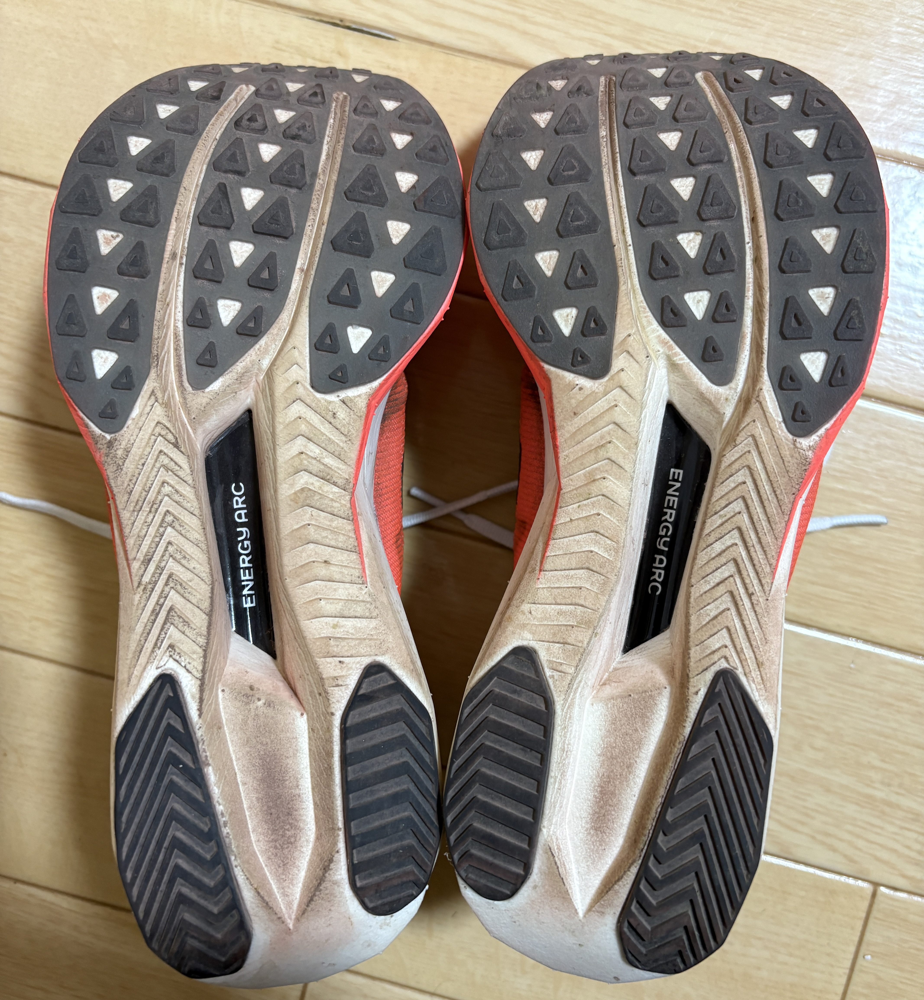

公式引用
* 100%PEBAフォームで作られたFuelCellミッドソールを搭載したSuperComp Eliteを完成させるために何年も研究が重ねられました。
* エナジーアークは、スポーツ特有のカーボンファイバープレートの形状と戦略的なミッドソールの空隙を組み合わせ、蓄積されたエネルギーを増加させ、より多くの総エネルギーを返還するように設計されています。
* 微調整されたカーボンファイバープレートにより、前足部の剛性が向上し、一歩一歩の推進力が感じられます。
* 約1.7mmの厚さの新しいアウトソール素材は、優れたトラクションのために設計されています。
* タンと履き口は、トレーニングシューズからレースシューズへの移行時に快適で自然な感覚を実現するように設計されています。
スペック

|
|
|---|---|
| ミッドソールドロップ | 8mm |
| 厚さ | 40mm |
| 重量 | 205g |
| 価格 | 29700円 |
サイズ感
サイズ感は他のシューズと変わりありません。ただ、シュータンが靴と一体型になっているためフィット感があること、横幅が若干細めなので、足が広い人はハーフサイズ上げも選択肢に入りそうです。

履いた感想
思った感想としては、好みは分かれそうだなという所です。 体感としては 爪先側で接地したときの反発は強くなく、どちかというと後方から中足部にかけての接地の人の方が反発が得られそう だと思いました。
踵部分がかなり柔らかい感じるので、踵接地の人には合いそうです。 また、反発感は他のシューズに比べたら物足りなく感じ、上位互換は沢山あるなという感じです。
例えば、トラックならPUMAのデヴィエイトニトロエリート３、マラソンならadidasのプロ４の方がいいですね。 特にマラソンで履くには反発や柔らかさが物足りないなと感じました。 ということで私は緩めの練習で履いています。


とはいえ 2000m5’50で快適に走れたので、全く劣っている訳ではないです。 こっちの方が好きという人もいたので本当に好みの問題ですね。 価格帯も他のシューズと変わりありません。
補足： 近くの競技場のタータンがボロく滑って走りづらいため、このタータンのみであればグリップも効くため先ほどの2足より優秀です。 そのためこのタータンで走る時は基本NBを履いています。

ニューバランス FuelCell SuperComp Elite v5
FuelCellフォームとカーボンプレートを搭載したニューバランス最上位レーシングモデル。フルマラソンでの反発力と安定感を重視するランナー向け。